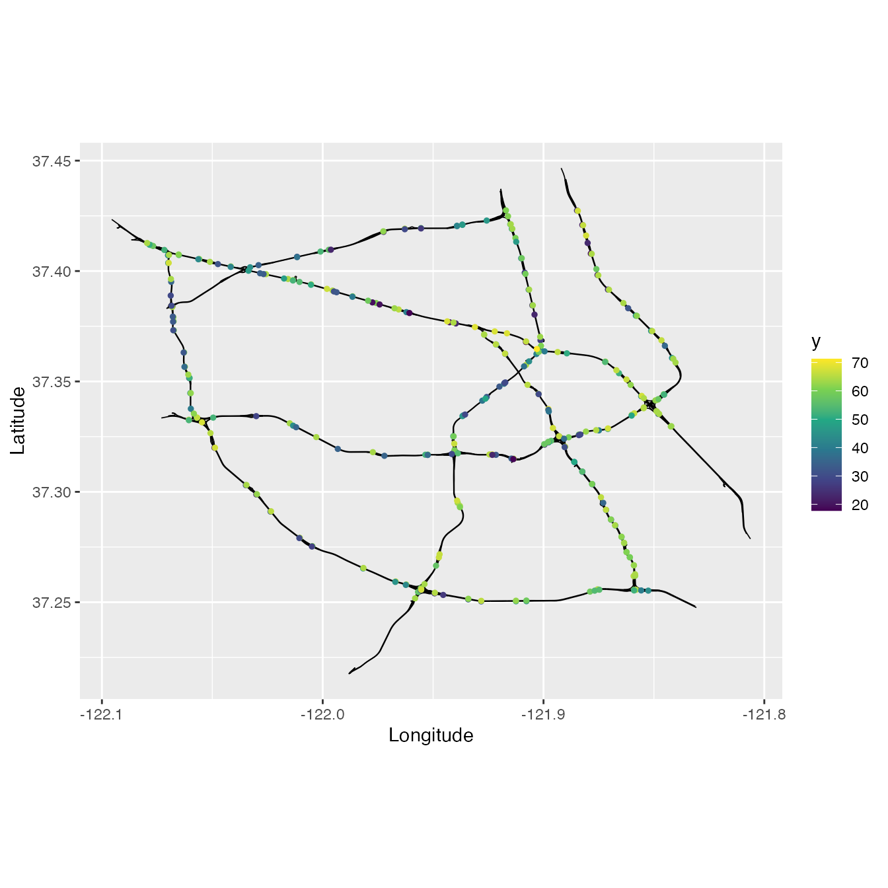
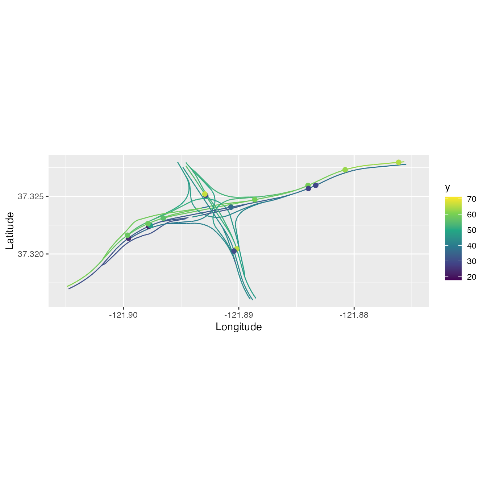
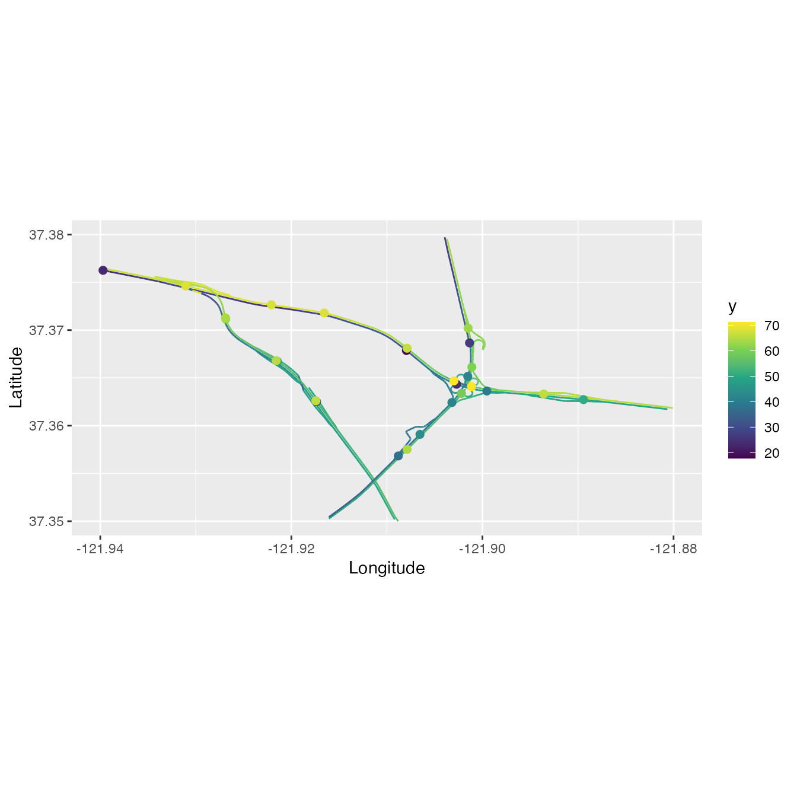
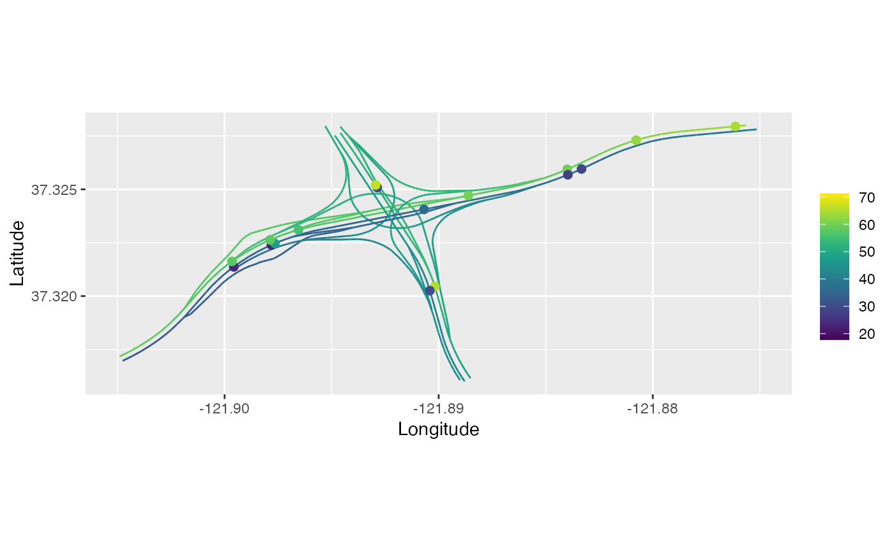
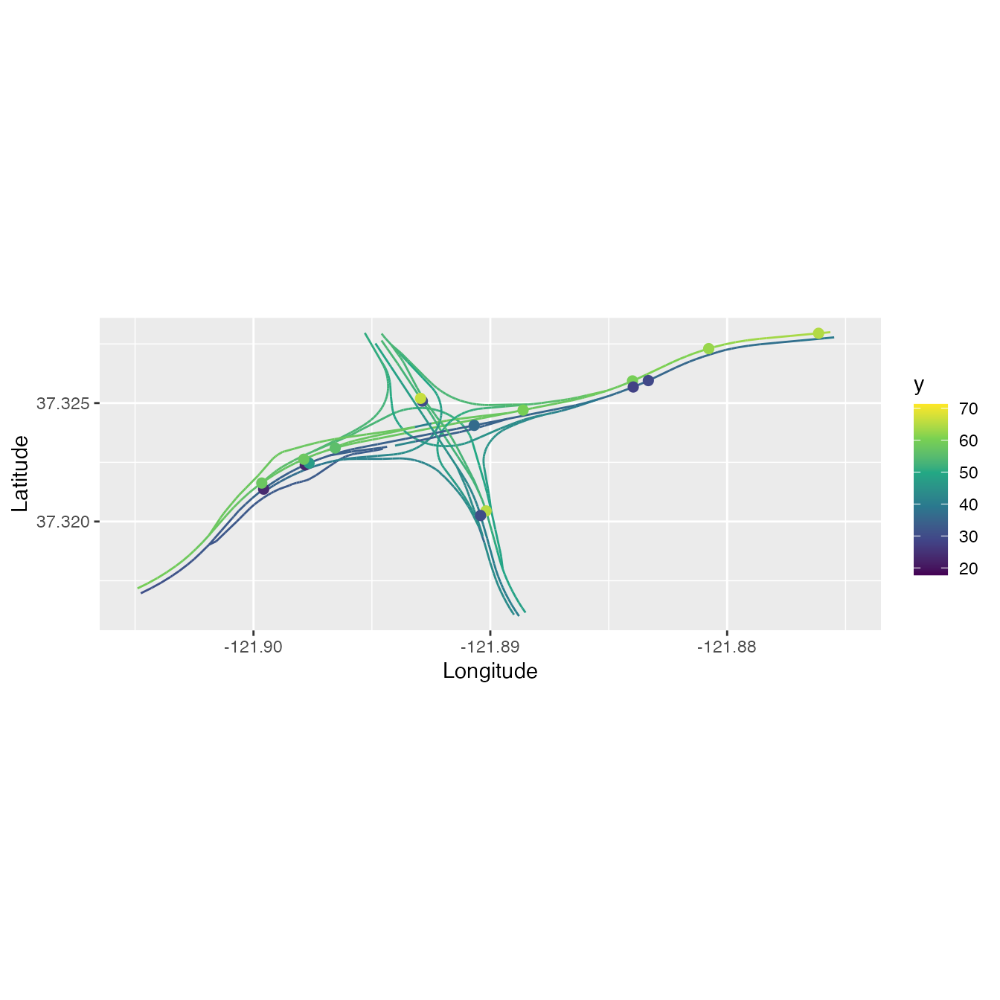
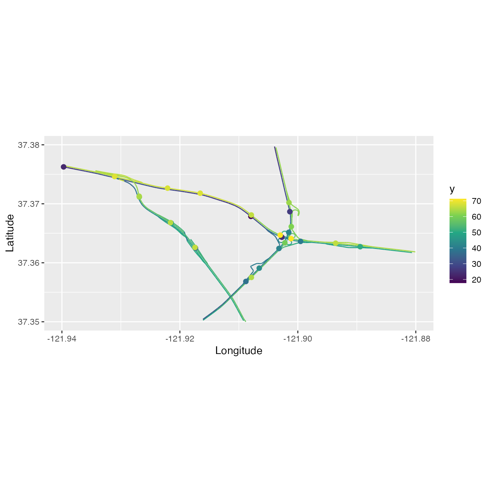
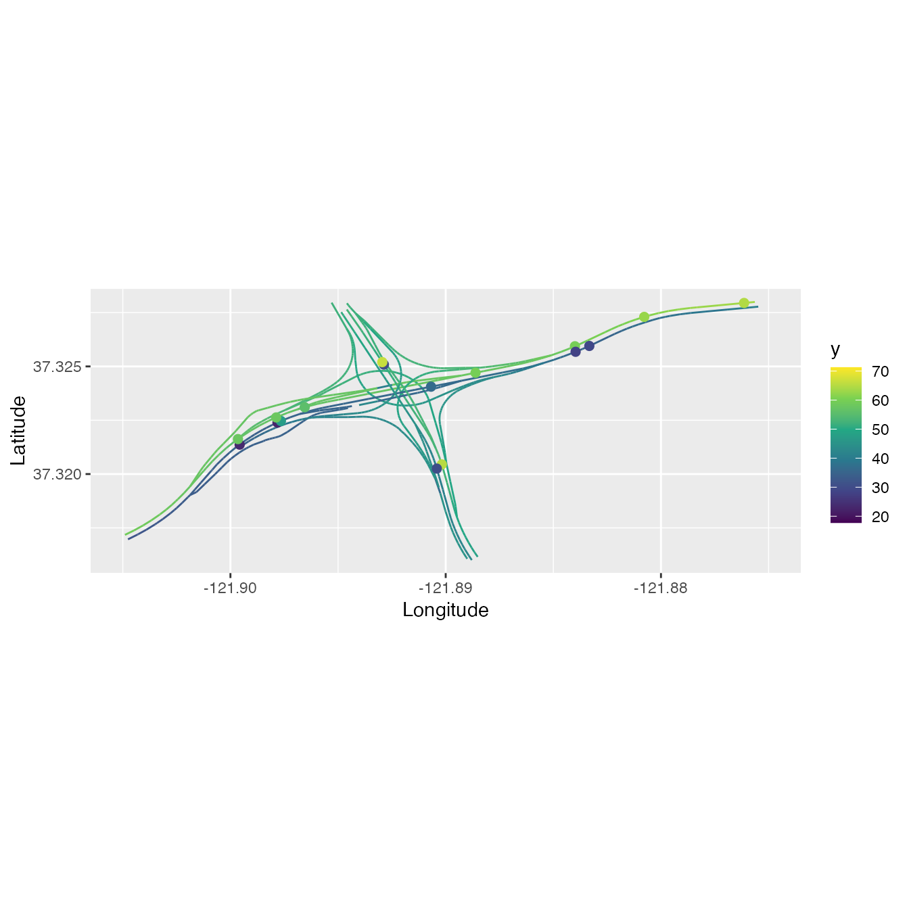
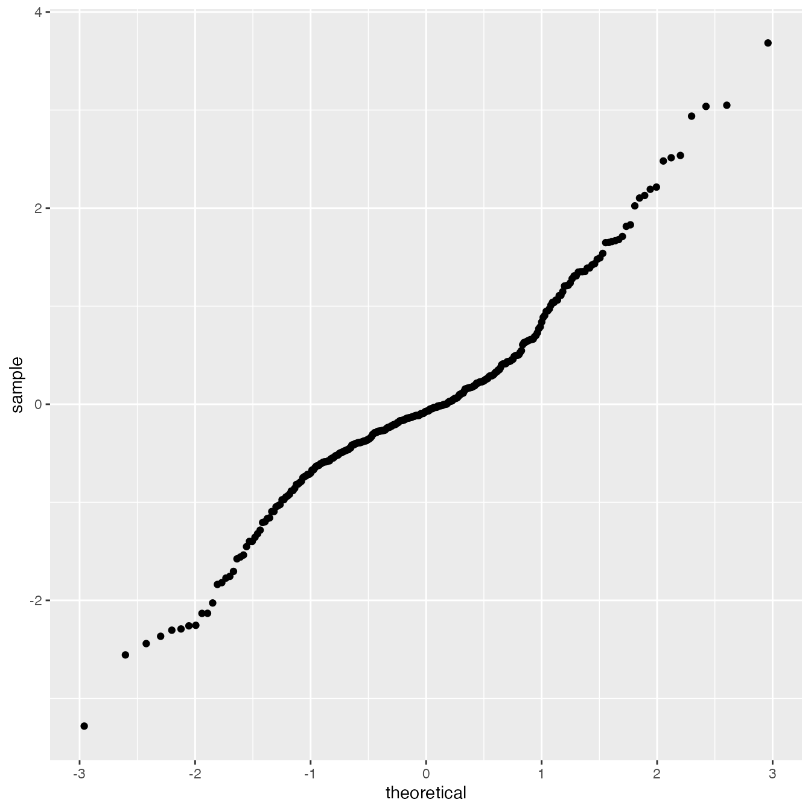
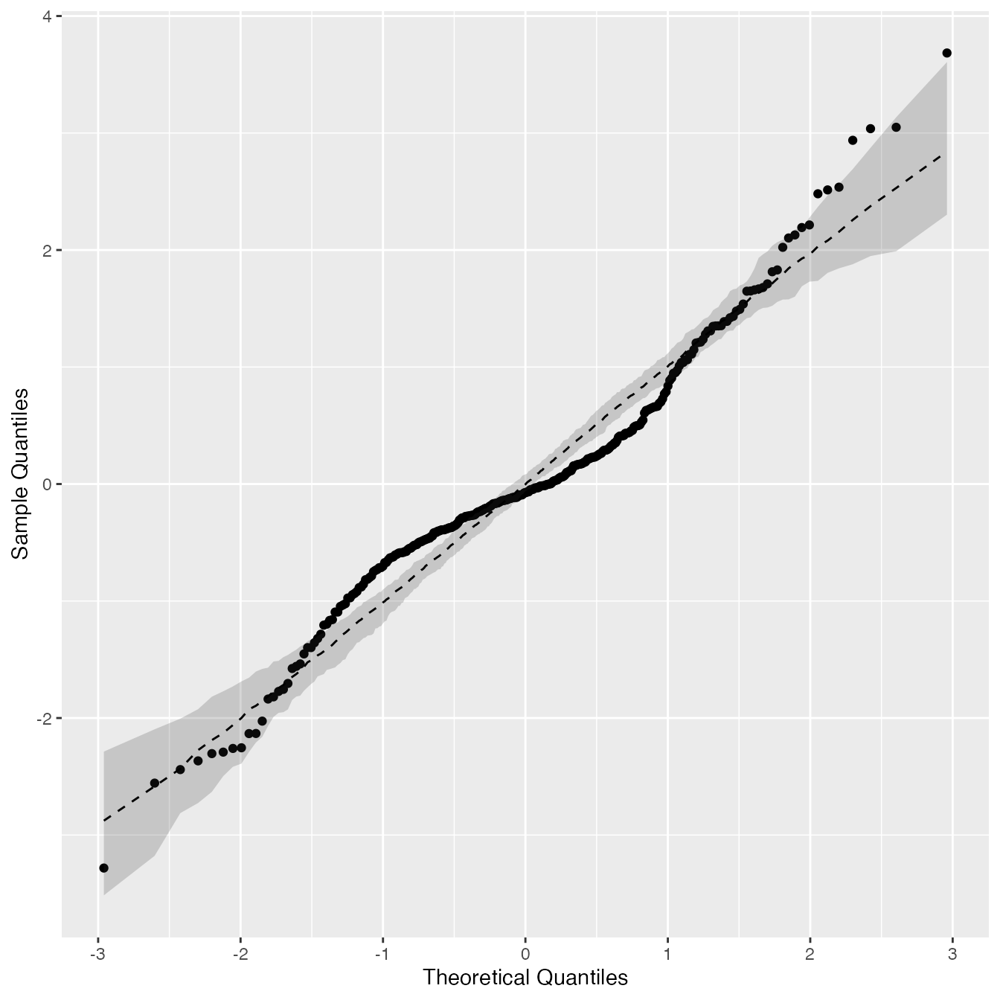

Comparison of different models using real data
David Bolin, Alexandre B. Simas, and Jonas Wallin
Created: 2024-02-09. Last modified: 2024-06-07.
Source:vignettes/comparison.rmd
comparison.rmdIntroduction
This vignette contains the details of the Application section of Bolin, Simas, and Wallin (2023). Our goal is to compare the predictive power of different models on metric graphs by cross-validation. More precisely, we consider the Whittle–Matérn fields introduced by Bolin, Simas, and Wallin (2024) and Bolin, Simas, and Wallin (2023), a Gaussian random field with an isotropic exponential covariance function Anderes, Møller, and Rasmussen (2020), and Matérn Gaussian processes based on the graph Laplacian Borovitskiy et al. (2021).
The dataset
For this example we will consider the pems data
contained in the MetricGraph package. The data consists of
traffic speed observations on highways in the city of San Jose,
California. The variable y contains the traffic speeds.
pems_graph <- metric_graph$new(edges = pems$edges, longlat=TRUE)
pems_graph$add_observations(data = pems$data, normalized=TRUE)Let us take a look at the observations:
pems_graph$plot(data = "y", vertex_size = 0)
The models
We will assume that the data has the following structure:
\[ y_i = \mu + u(s_i) + \varepsilon_i, \quad i=1,\ldots,n, \] where \(\mu\) is a constant that represents the mean of the field, \(u(\cdot)\) is a Gaussian random field, \(s_i\in \Gamma\) are observation locations and \(\varepsilon_i\) are independent centered Gaussian variables \(N(0,\sigma_e^2)\) representing measurement noise.
Let us fit the different models, that is, we will assume several
different possible latent fields \(u(\cdot)\). We start by fitting a
Whittle-Matérn field with alpha = 1:
and look at its summary:
summary(fit_alpha1)
#>
#> Latent model - Whittle-Matern with alpha = 1
#>
#> Call:
#> graph_lme(formula = y ~ 1, graph = pems_graph, model = list(type = "WhittleMatern",
#> alpha = 1))
#>
#> Fixed effects:
#> Estimate Std.error z-value Pr(>|z|)
#> (Intercept) 51.205 4.114 12.45 <2e-16 ***
#>
#> Random effects:
#> Estimate Std.error z-value
#> tau 0.104439 0.007826 13.345
#> kappa 0.108664 0.049911 2.177
#>
#> Random effects (Matern parameterization):
#> Estimate Std.error z-value
#> sigma 20.539 4.358 4.713
#> range 18.405 8.438 2.181
#>
#> Measurement error:
#> Estimate Std.error z-value
#> std. dev 6.8629 0.4084 16.81
#> ---
#> Signif. codes: 0 '***' 0.001 '**' 0.01 '*' 0.05 '.' 0.1 ' ' 1
#>
#> Log-Likelihood: -1221.225
#> Number of function calls by 'optim' = 28
#> Optimization method used in 'optim' = L-BFGS-B
#>
#> Time used to: fit the model = 8.08967 secsNow, we will fit a Whittle-Matérn field with
alpha = 2:
and its summary:
summary(fit_alpha2)
#>
#> Latent model - Whittle-Matern with alpha = 2
#>
#> Call:
#> graph_lme(formula = y ~ 1, graph = pems_graph, model = list(type = "WhittleMatern",
#> alpha = 2))
#>
#> Fixed effects:
#> Estimate Std.error z-value Pr(>|z|)
#> (Intercept) 51.165 2.797 18.29 <2e-16 ***
#>
#> Random effects:
#> Estimate Std.error z-value
#> tau 0.08662 0.01552 5.579
#> kappa 0.44611 0.07523 5.930
#>
#> Random effects (Matern parameterization):
#> Estimate Std.error z-value
#> sigma 19.373 2.532 7.650
#> range 7.765 1.281 6.063
#>
#> Measurement error:
#> Estimate Std.error z-value
#> std. dev 7.2348 0.3721 19.44
#> ---
#> Signif. codes: 0 '***' 0.001 '**' 0.01 '*' 0.05 '.' 0.1 ' ' 1
#>
#> Log-Likelihood: -1207.996
#> Number of function calls by 'optim' = 28
#> Optimization method used in 'optim' = L-BFGS-B
#>
#> Time used to: fit the model = 12.21145 secsWe will now fit Whittle-Matérn fields with alpha = 1 and
alpha=2, and by performing a boundary correction on
vertices of degree 1. To such an end, we set BC=1:
fit_alpha1_bc <- graph_lme(y ~ 1, graph=pems_graph, BC = 1,
model = list(type = "WhittleMatern", alpha = 1))
fit_alpha2_bc <- graph_lme(y ~ 1, graph=pems_graph, BC = 1,
model = list(type = "WhittleMatern", alpha = 2))Now, let us look at the summaries:
summary(fit_alpha1_bc)
#>
#> Latent model - Whittle-Matern with alpha = 1
#>
#> Call:
#> graph_lme(formula = y ~ 1, graph = pems_graph, model = list(type = "WhittleMatern",
#> alpha = 1), BC = 1)
#>
#> Fixed effects:
#> Estimate Std.error z-value Pr(>|z|)
#> (Intercept) 51.157 4.289 11.93 <2e-16 ***
#>
#> Random effects:
#> Estimate Std.error z-value
#> tau 0.104589 0.007829 13.36
#> kappa 0.095231 0.051193 1.86
#>
#> Random effects (Matern parameterization):
#> Estimate Std.error z-value
#> sigma 21.908 5.474 4.002
#> range 21.002 11.268 1.864
#>
#> Measurement error:
#> Estimate Std.error z-value
#> std. dev 6.8638 0.4083 16.81
#> ---
#> Signif. codes: 0 '***' 0.001 '**' 0.01 '*' 0.05 '.' 0.1 ' ' 1
#>
#> Log-Likelihood: -1221.377
#> Number of function calls by 'optim' = 32
#> Optimization method used in 'optim' = L-BFGS-B
#>
#> Time used to: fit the model = 9.22826 secsand
summary(fit_alpha2_bc)
#>
#> Latent model - Whittle-Matern with alpha = 2
#>
#> Call:
#> graph_lme(formula = y ~ 1, graph = pems_graph, model = list(type = "WhittleMatern",
#> alpha = 2), BC = 1)
#>
#> Fixed effects:
#> Estimate Std.error z-value Pr(>|z|)
#> (Intercept) 51.118 2.822 18.11 <2e-16 ***
#>
#> Random effects:
#> Estimate Std.error z-value
#> tau 0.08750 0.01569 5.578
#> kappa 0.43348 0.07525 5.760
#>
#> Random effects (Matern parameterization):
#> Estimate Std.error z-value
#> sigma 20.023 2.733 7.326
#> range 7.991 1.357 5.888
#>
#> Measurement error:
#> Estimate Std.error z-value
#> std. dev 7.2342 0.3718 19.46
#> ---
#> Signif. codes: 0 '***' 0.001 '**' 0.01 '*' 0.05 '.' 0.1 ' ' 1
#>
#> Log-Likelihood: -1208.179
#> Number of function calls by 'optim' = 27
#> Optimization method used in 'optim' = L-BFGS-B
#>
#> Time used to: fit the model = 12.60142 secsSimilarly, let us now fit a Matérn Gaussian model based on the graph
Laplacian for alpha=1 and alpha=2. For these,
we first fit the models without fixed effects, and then use those
results as starting values for the complete optimization. The reason for
this is that the estimation otherwise is slightly unstable for these
models.
fit_GL1 <- graph_lme(y ~ -1, graph=pems_graph,
model = list(type = "graphLaplacian", alpha = 1), optim_method = "Nelder-Mead")
fit_GL1 <- graph_lme(y ~ 1, graph=pems_graph,
model = list(type = "graphLaplacian", alpha = 1), previous_fit = fit_GL1)
fit_GL2 <- graph_lme(y ~ 1, graph=pems_graph,
model = list(type = "graphLaplacian", alpha = 2), previous_fit = fit_GL1)and look at their summaries:
summary(fit_GL1)
#>
#> Latent model - graph Laplacian SPDE with alpha = 1
#>
#> Call:
#> graph_lme(formula = y ~ 1, graph = pems_graph, model = list(type = "graphLaplacian",
#> alpha = 1), previous_fit = fit_GL1)
#>
#> Fixed effects:
#> Estimate Std.error z-value Pr(>|z|)
#> (Intercept) 50.849 4.307 11.81 <2e-16 ***
#>
#> Random effects:
#> Estimate Std.error z-value
#> tau 0.104550 0.007851 13.317
#> kappa 0.070245 0.033196 2.116
#>
#> Random effects (Matern parameterization):
#> Estimate Std.error z-value
#> sigma 25.52 5.57 4.581
#> range 28.47 13.43 2.120
#>
#> Measurement error:
#> Estimate Std.error z-value
#> std. dev 6.8650 0.4085 16.81
#> ---
#> Signif. codes: 0 '***' 0.001 '**' 0.01 '*' 0.05 '.' 0.1 ' ' 1
#>
#> Log-Likelihood: -1221.383
#> Number of function calls by 'optim' = 23
#> Optimization method used in 'optim' = L-BFGS-B
#>
#> Time used to: fit the model = 0.59269 secsand
summary(fit_GL2)
#>
#> Latent model - graph Laplacian SPDE with alpha = 2
#>
#> Call:
#> graph_lme(formula = y ~ 1, graph = pems_graph, model = list(type = "graphLaplacian",
#> alpha = 2), previous_fit = fit_GL1)
#>
#> Fixed effects:
#> Estimate Std.error z-value Pr(>|z|)
#> (Intercept) 50.849 2.867 17.73 <2e-16 ***
#>
#> Random effects:
#> Estimate Std.error z-value
#> tau 0.14862 0.02540 5.851
#> kappa 0.27395 0.04623 5.926
#>
#> Random effects (Matern parameterization):
#> Estimate Std.error z-value
#> sigma 23.463 3.220 7.287
#> range 12.645 2.062 6.131
#>
#> Measurement error:
#> Estimate Std.error z-value
#> std. dev 7.1252 0.3852 18.5
#> ---
#> Signif. codes: 0 '***' 0.001 '**' 0.01 '*' 0.05 '.' 0.1 ' ' 1
#>
#> Log-Likelihood: -1208.703
#> Number of function calls by 'optim' = 20
#> Optimization method used in 'optim' = L-BFGS-B
#>
#> Time used to: fit the model = 0.61493 secsObserve that the default optimizer (L-BFGS-B) failed to converge,
thus an alternative optimizer was used, when fitting the graph Laplacian
model with alpha=2.
Let us now fit a Gaussian field with isotropic exponential covariance function:
fit_isoexp <- graph_lme(y ~ 1, graph=pems_graph,
model = list(type = "isoCov"))
#> Warning in graph_lme(y ~ 1, graph = pems_graph, model = list(type = "isoCov")):
#> No check for Euclidean edges have been perfomed on this graph. The isotropic
#> covariance models are only known to work for graphs with Euclidean edges. You
#> can check if the graph has Euclidean edges by running the `check_euclidean()`
#> method. See the vignette
#> https://davidbolin.github.io/MetricGraph/articles/isotropic_noneuclidean.html
#> for further details.and look at the summary:
summary(fit_isoexp)
#>
#> Latent model - Covariance-based model
#>
#> Call:
#> graph_lme(formula = y ~ 1, graph = pems_graph, model = list(type = "isoCov"))
#>
#> Fixed effects:
#> Estimate Std.error z-value Pr(>|z|)
#> (Intercept) 33.18 24.37 1.362 0.173
#>
#> Random effects:
#> Estimate Std.error z-value
#> tau 31.38007 16.51656 1.90
#> kappa 0.04565 0.05018 0.91
#>
#> Measurement error:
#> Estimate Std.error z-value
#> std. dev 6.8742 0.4088 16.82
#> ---
#> Signif. codes: 0 '***' 0.001 '**' 0.01 '*' 0.05 '.' 0.1 ' ' 1
#>
#> Log-Likelihood: -1223.688
#> Number of function calls by 'optim' = 35
#> Optimization method used in 'optim' = L-BFGS-B
#>
#> Time used to: fit the model = 3.12671 secsObserve the warning, message. This message tells us that we did not check if the metric graph has Euclidean edges. Let us check now:
pems_graph$check_euclidean()Now, we can look at the graph’s characteristics contained in this summary:
summary(pems_graph)
#> A metric graph object with:
#>
#> Vertices:
#> Total: 691
#> Degree 1: 11; Degree 2: 360; Degree 3: 315; Degree 4: 5;
#> With incompatible directions: 17
#>
#> Edges:
#> Total: 848
#> Lengths:
#> Min: 0.005073271 ; Max: 3.281839 ; Total: 470.7559
#> Weights:
#> Min: 1 ; Max: 1
#> That are circles: 0
#>
#> Graph units:
#> Vertices unit: degrees ; Lengths unit: km
#>
#> Longitude and Latitude coordinates: TRUE
#> Which spatial package: sp
#> CRS: +proj=longlat +datum=WGS84 +no_defs
#>
#> Some characteristics of the graph:
#> Connected: TRUE
#> Has loops: FALSE
#> Has multiple edges: TRUE
#> Is a tree: FALSE
#> Distance consistent: FALSE
#> Has Euclidean edges: FALSE
#>
#> Computed quantities inside the graph:
#> Laplacian: FALSE ; Geodesic distances: TRUE
#> Resistance distances: FALSE ; Finite element matrices: FALSE
#>
#> Mesh: The graph has no mesh!
#>
#> Data:
#> Columns: y
#> Groups: None
#>
#> Tolerances:
#> vertex-vertex: 0.001
#> vertex-edge: 0.001
#> edge-edge: 0Thus, this graph does not have Euclidean edges. This means, when we
fit the model, we actually modify the graph, when we add the
obvservations as vertices. By default, when fitting isotropic models,
the graph_lme() function checks it the metric graph after
adding the observations as vertices has Euclidean edges. We can check by
looking at the euclidean element of the fitted model:
fit_isoexp$euclidean
#> [1] FALSETherefore, even after adding the observations as vertices, the metric graph is still not Euclidean.
Let us check if we can fit an isotropic model with isotropic Matérn
covariance function with smoothness parameter nu=1.5 (which
corresponds to alpha=2 for Whittle-Matérn fields and Matérn
Gaussian models based on the graph Laplacian). Recall that by the
results in Anderes, Møller, and Rasmussen (2020), it is
not guaranteed that such a function will be a valid covariance function
even on an metric graph with Euclidean edges.
We start by defining the Matérn covariance corresponding to
alpha=2:
cov_mat <- function(h,theta){
tau <- theta[1]
kappa <- theta[2]
1/tau * (1 + kappa * abs(h)) * exp(- kappa * abs(h))
}Let us now fit the model:
fit_isomat <- graph_lme(y ~ 1, graph = pems_graph,
model = list(type = "isoCov", cov_function = cov_mat),
model_options = list(start_par_vec = fit_alpha2$coeff$random_effects))
#> Warning in graph_lme(y ~ 1, graph = pems_graph, model = list(type = "isoCov", :
#> This graph DOES NOT have Euclidean edges. The isotropic covariance models are
#> NOT guaranteed to work for this graph! See the vignette
#> https://davidbolin.github.io/MetricGraph/articles/isotropic_noneuclidean.html
#> for further details.
#> Warning in graph_lme(y ~ 1, graph = pems_graph, model = list(type = "isoCov", :
#> All optimization methods failed to provide a positive-definite Hessian. The
#> optimization method with largest likelihood was chosen. You can try to obtain a
#> positive-definite Hessian by setting 'improve_hessian' to TRUE.
#> Error in chol.default(Sigma_non_na): the leading minor of order 258 is not positiveIndeed, the model could not be fitted.
Let us now quickly look at the likelihoods of the fitted models. We begin by creating a list with the fitted models:
fitted_models_list <- list("isoExp" = fit_isoexp,
"GL1" = fit_GL1,
"alpha=1" = fit_alpha1,
"alpha=1 bc" = fit_alpha1_bc,
"GL2" = fit_GL2,
"alpha=2" = fit_alpha2,
"alpha=2 bc" = fit_alpha2_bc)Now, the likelihoods:
table_lik <- sapply(fitted_models_list, logLik)
# Printing the negative likelihoods:
-table_lik
#> isoExp GL1 alpha=1 alpha=1 bc GL2 alpha=2 alpha=2 bc
#> 1223.688 1221.383 1221.225 1221.377 1208.703 1207.996 1208.179Comparison by cross-validation
We will now use the function posterior_crossvalidation()
to perform leave-one-out cross validation based on the estimated
parameters and compare the results:
res <- posterior_crossvalidation(fitted_models_list, tibble=FALSE)
res$scores
#> logscore crps scrps mae rmse
#> isoExp 3.603170 4.733602 2.132627 6.177213 8.606108
#> GL1 3.604522 4.737170 2.133212 6.174884 8.610858
#> alpha=1 3.604623 4.737561 2.133209 6.177526 8.613469
#> alpha=1 bc 3.604420 4.736101 2.133070 6.167904 8.611471
#> GL2 3.551302 4.530791 2.106780 5.852531 8.303655
#> alpha=2 3.549369 4.521769 2.106920 5.840243 8.255846
#> alpha=2 bc 3.548985 4.520621 2.106719 5.842488 8.254987Kriging
We will now perform kriging with the different fitted models. Observe that for the Matérn Gaussian model based on the graph Laplacian and the Gaussian model with isotropic exponential covariance function, we actually modify the model when doing predictions. See the On isotropic covariances on metric graphs with non-Euclidean edges vignette for further details.
Therefore, even though we are able to obtain ``predictions’’ using the Matérn Gaussian models based on graph Laplacian and the Gaussian models with istropic exponential covariance function, there are some inconsistencies between the model used to fit the data, and the model used to obtain predictions. Such inconsistency is not present in the Whittle-Matérn models on metric graphs.
Let us begin by building a mesh on the metric graph and create a
data.frame() with such mesh locations:
pems_graph$build_mesh(h = 0.1)
df_pred <- data.frame(edge_number = pems_graph$mesh$PtE[,1],
distance_on_edge = pems_graph$mesh$PtE[,2])As the region is very large, we will select two smaller subregions to ``zoom in’’, so we can see the predictions with more details. Let us create variables containing the coordinates of such regions:
coordx_lwr1 <- -121.905
coordx_upr1 <- -121.875
coordy_lwr1 <- 37.316
coordy_upr1 <- 37.328Now, for the second region:
coordx_lwr2<- -121.94
coordx_upr2 <- -121.88
coordy_lwr2 <- 37.35
coordy_upr2 <- 37.38We can now obtain the predictions. We will use the
augment() method to obtain such predictions. We start by
obtaining predictions for the Whittle-Matérn models with
alpha=1:
pred_alpha1 <- augment(fit_alpha1, newdata = df_pred,
normalized = TRUE)and with boundary correction:
pred_alpha1_bc <- augment(fit_alpha1_bc, newdata = df_pred,
normalized = TRUE)Let plot the predictions with the corresponding observed values.
First for the model without boundary correction. As the predictions were
obtained on the mesh nodes, we can supply the fitted values into the
X argument of the plot_function() method:
library(ggplot2)
p <- pems_graph$plot_function(newdata = pred_alpha1, data = ".fitted",
improve_plot=TRUE, vertex_size = 0,
edge_width = 0.5) We can now add the original observations obtain the plot in region 1:
pems_graph$plot(data = "y", vertex_size = 0, data_size = 2,
edge_width = 0, p = p) +
xlim(coordx_lwr1, coordx_upr1) +
ylim(coordy_lwr1, coordy_upr1) Now in region 2:
pems_graph$plot(data = "y", vertex_size = 0, data_size = 2,
edge_width = 0, p = p) +
xlim(coordx_lwr2, coordx_upr2) +
ylim(coordy_lwr2, coordy_upr2)Similarly, for alpha=1 with boundary correction in
region 1:
p <- pems_graph$plot_function(newdata = pred_alpha1_bc, data = ".fitted",
improve_plot=TRUE, vertex_size = 0,
edge_width = 0.5)
pems_graph$plot(data = "y", vertex_size = 0, data_size = 2,
edge_width = 0, p = p) +
xlim(coordx_lwr1, coordx_upr1) +
ylim(coordy_lwr1, coordy_upr1) and in region 2:
p <- pems_graph$plot_function(newdata = pred_alpha1_bc, data = ".fitted",
improve_plot=TRUE, vertex_size = 0,
edge_width = 0.5)
pems_graph$plot(data = "y", vertex_size = 0, data_size = 2,
edge_width = 0, p = p) +
xlim(coordx_lwr2, coordx_upr2) +
ylim(coordy_lwr2, coordy_upr2) Now, for the Whittle-Matérn models with alpha=2:
pred_alpha2 <- augment(fit_alpha2, newdata = df_pred,
normalized = TRUE)Let us now build the plot for region 1:
p <- pems_graph$plot_function(newdata = pred_alpha2, data = ".fitted",
improve_plot=TRUE, vertex_size = 0,
edge_width = 0.5)
pems_graph$plot(data = "y", vertex_size = 0, data_size = 2,
edge_width = 0, p = p) +
xlim(coordx_lwr1, coordx_upr1) +
ylim(coordy_lwr1, coordy_upr1) 
and region 2:
p <- pems_graph$plot_function(newdata = pred_alpha2, data = ".fitted",
improve_plot=TRUE, vertex_size = 0,
edge_width = 0.5)
pems_graph$plot(data = "y", vertex_size = 0, data_size = 2,
edge_width = 0, p = p) +
xlim(coordx_lwr2, coordx_upr2) +
ylim(coordy_lwr2, coordy_upr2) 
Now with boundary correction:
pred_alpha2_bc <- augment(fit_alpha2_bc, newdata = df_pred,
normalized = TRUE)the plot in region 1:
p <- pems_graph$plot_function(newdata = pred_alpha2_bc, data = ".fitted",
improve_plot=TRUE, vertex_size = 0,
edge_width = 0.5)
pems_graph$plot(data = "y", vertex_size = 0, data_size = 2,
edge_width = 0, p = p) +
xlim(coordx_lwr1, coordx_upr1) +
ylim(coordy_lwr1, coordy_upr1) and in region 2:
p <- pems_graph$plot_function(newdata = pred_alpha2_bc, data = ".fitted",
improve_plot=TRUE, vertex_size = 0,
edge_width = 0.5)
pems_graph$plot(data = "y", vertex_size = 0, data_size = 2,
edge_width = 0, p = p) +
xlim(coordx_lwr2, coordx_upr2) +
ylim(coordy_lwr2, coordy_upr2) 
We now move to the models based on the graph Laplacian:
pred_GL1 <- augment(fit_GL1, newdata = df_pred,
normalized = TRUE)the plot in region 1:
p <- pems_graph$plot_function(newdata = pred_GL1, data = ".fitted",
improve_plot = TRUE, vertex_size = 0,
edge_width = 0.5)
pems_graph$plot(data = "y", vertex_size = 0, data_size = 2,
edge_width = 0, p = p) +
xlim(coordx_lwr1, coordx_upr1) +
ylim(coordy_lwr1, coordy_upr1) and in region 2:
p <- pems_graph$plot_function(newdata = pred_GL1, data = ".fitted",
improve_plot = TRUE, vertex_size = 0,
edge_width = 0.5)
pems_graph$plot(data = "y", vertex_size = 0, data_size = 2,
edge_width = 0, p = p) +
xlim(coordx_lwr2, coordx_upr2) +
ylim(coordy_lwr2, coordy_upr2) and for alpha=2:
pred_GL2 <- augment(fit_GL2, newdata = df_pred,
normalized = TRUE)the plot in region 1:
p <- pems_graph$plot_function(newdata = pred_GL2, data = ".fitted",
improve_plot = TRUE, vertex_size = 0,
edge_width = 0.5)
pems_graph$plot(data = "y", vertex_size = 0, data_size = 2,
edge_width = 0, p = p) +
xlim(coordx_lwr1, coordx_upr1) +
ylim(coordy_lwr1, coordy_upr1) 
and in region 2:
p <- pems_graph$plot_function(newdata = pred_GL2, data = ".fitted",
improve_plot = TRUE, vertex_size = 0,
edge_width = 0.5)
pems_graph$plot(data = "y", vertex_size = 0, data_size = 2,
edge_width = 0, p = p) +
xlim(coordx_lwr2, coordx_upr2) +
ylim(coordy_lwr2, coordy_upr2) 
Finally, for models with isotropic exponential covariance:
pred_isoexp <- augment(fit_isoexp, newdata = df_pred,
normalized = TRUE)and the corresponding plot in region 1:
p <- pems_graph$plot_function(newdata = pred_isoexp, data = ".fitted",
improve_plot = TRUE, vertex_size = 0,
edge_width = 0.5)
pems_graph$plot(data = "y", vertex_size = 0, data_size = 2,
edge_width = 0, p = p) +
xlim(coordx_lwr1, coordx_upr1) +
ylim(coordy_lwr1, coordy_upr1) 
and in region 2:
A quick diagnostic analysis
The cross-validation suggests that the best model with respect to
RMSE, MAE, CRPS and log-score is the Whittle-Matérn field with
alpha=2 and boundary corrections. Let the residual be given
by \[e_i = y_i - \mu -
E(u(s_i)|y_1,\ldots,y_n), \quad i=1,\ldots, n.\] We will consider
a standardized version of the above residual where we normalize it by
divinding by its standard deviation. Such standardized residuals are
given when using the augment function when the argument
se_fit is set to TRUE. Let us now compute such
residuals, then do a simple QQ plot of them.
fitted_aug <- augment(fit_alpha2_bc, se_fit = TRUE)Now let us build the QQ-plot against the theoretical quantiles a standard Gaussian distribution:

We will now do a parametric bootstrap procedure to obtain confidence
bands (simulated envelopes) for the above QQ plot. We will consider
\(B=100\) bootstrap samples. We start
by generating \(B\) samples. This can
be done by using the simulate() method:
B <- 100
samples_alpha2_bc <- simulate(fit_alpha2_bc, nsim = B)To reduce computational cost, we will fix the latent parameters at
the original fitted values, this can be done by passing the fitted model
as the previous_fit argument, and setting
fix_coeff to TRUE. We will compute the new
standardized residuals based on these new samples:
simul_std_resid <- matrix(nrow = nrow(fitted_aug), ncol = B)
# We clone the graph to add new data
pems_graph_new <- pems_graph$clone()
for(i in 1:B){
# We get the simulated response. Since we do not have replicates,
# all of them are in the first element of the list.
y_tmp <- samples_alpha2_bc$samples[[1]][,i]
# Add new observations
pems_graph_new$add_observations(data = pems_graph$mutate(y = y_tmp),
clear_obs = TRUE, verbose = 0)
new_fit <- graph_lme(y ~ 1, graph=pems_graph_new, BC = 1,
previous_fit = fit_alpha2_bc,
model = list(type = "WhittleMatern", alpha = 2),
fix_coeff = TRUE)
new_fitted_aug <- augment(new_fit, se_fit = TRUE)
simul_std_resid[,i] <- new_fitted_aug[[".std_resid"]]
}We will now create the lower and upper bands with 95% confidence, as well as plot a median line. We being by extracting the lower, upper and median values.
prob <- 0.95
simul_std_resid <- t(simul_std_resid)
simul_std_resid <- t(apply(simul_std_resid, 1, sort))
simul_std_resid <- apply(simul_std_resid, 2, sort)
id1 <- max(1, round(B * (1 - prob) / 2))
id2 <- round(B * (1 + prob) / 2)
bands <- rbind(simul_std_resid[id2, ], apply(simul_std_resid, 2, stats::median), simul_std_resid[id1, ])
bands <- as.data.frame(t(bands))
colnames(bands) <- c("upper", "median", "lower") Let us now produce the QQ plot with the confidence bands and median
line. We start by obtaining the quantile values, and add them to the
bands data.frame:
tmp_quantiles <- qqnorm(fitted_aug[[".std_resid"]])
bands[["x"]] <- sort(tmp_quantiles$x)
bands[["y"]] <- sort(tmp_quantiles$y)
p <- bands %>% ggplot(aes(x = x, y = y)) + geom_point() +
geom_ribbon(aes(x = x, ymin = lower, ymax = upper), alpha = 0.2) +
geom_path(aes(x=x, y = median), linetype = 2) +
labs(x = "Theoretical Quantiles", y = "Sample Quantiles")
p
By observing the QQ plot with confidence bands, we can see that the Gaussianity assumption is reasonable; however, the fit can likely be improved by considering non-stationary Gaussian models as latent fields. However, it is not the goal of this vignette, as we are only comparing exact models. Our package has an implementation for nonstationary Gaussian models using finite element approximations.